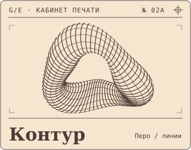
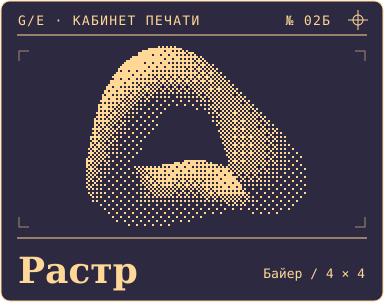

G/E ПОЛЕВОЕ БЮРО
Уменьшение движения · фон неподвижен
ЖУРНАЛ СВЕТАЛИСТ 01
Север
Луна висит над грядой. За полями этой карточки медленно плывёт берег. Выдели строку мышью: это текст страницы, а не надпись на картинке.
К пробным оттискам ↓ТИРАЖНАЯЛИСТ 02
Два цвета, одна форма
У обоих колец одна геометрия и один ракурс. В первом отверстие читается по изгибу линий, во втором — по сгущению точек.

